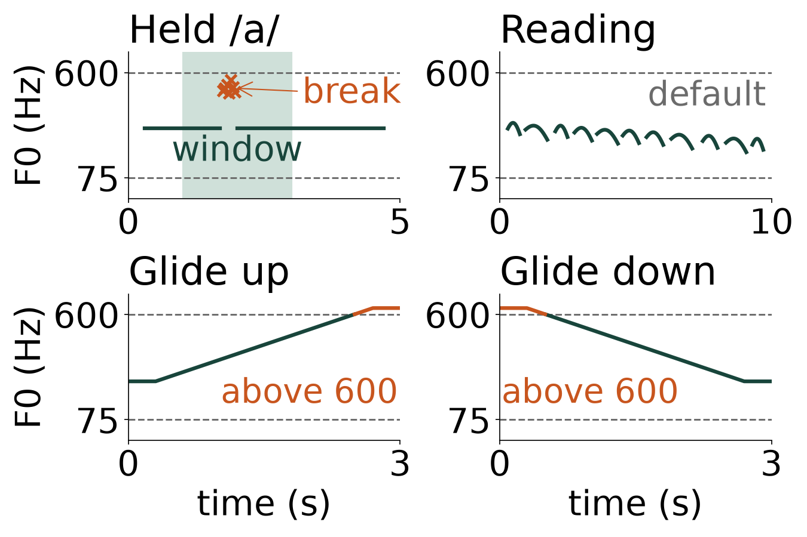
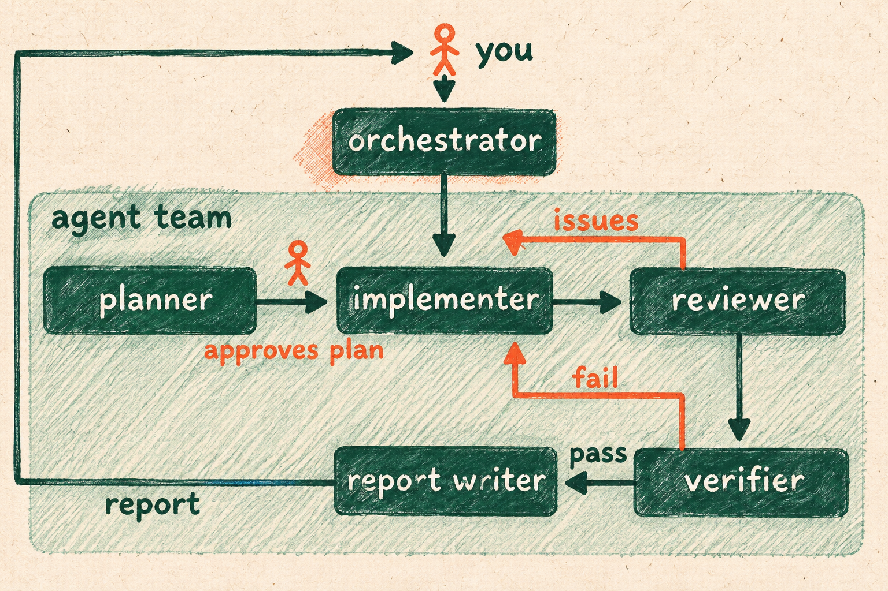
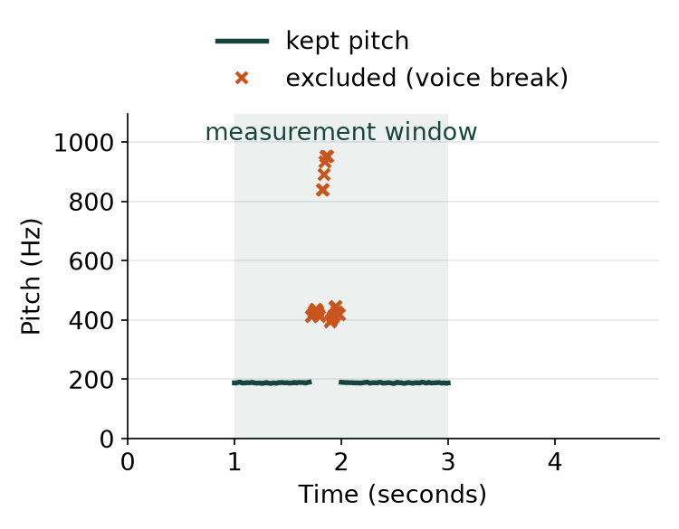
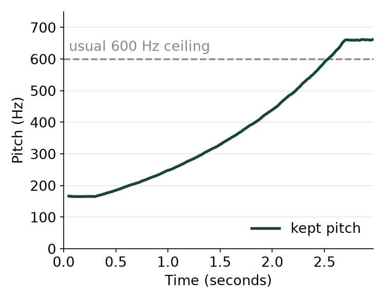

Words with a dotted underline, like agent team, are explained in the course.
The problem
Speech-language pathologists treat voice problems, and they measure a voice from its recordings. A computer made four recordings for a made-up student: a held "ah", a passage read aloud, and two "ah" glides, one up and one down. We want each recording's pitch in hertz (Hz), the number of times the voice vibrates per second.

What we want to find out
- How does the average pitch of the held "ah" compare with that of the reading?
- Which of these two recordings varies more in pitch, and what might explain the difference?
- What are the lowest and highest pitches in the reading, in each glide and in both glides, leaving out places Praat got wrong?
- Which published study, if any, measured a group of people with the student's age, sex, language and recording task?
- How do the student's measurements compare with that study's values, and what might explain any difference?
What the agent team does

An agent team is a set of agents, AI models that each do one job. The implementer runs Praat on each recording, leaves out wrong values, works out the pitch numbers and finds published values to compare. The verifier measures the recordings again on its own and judges the work on the three points below.
What the recordings are and what a comparison can say
- The made-up student is a 22-year-old woman who grew up speaking American English.
- The held "ah" was made at a steady 188.0 Hz, with one voice break, where the voice stops vibrating evenly.
- The reading rises and falls like speech but has no words.
- A comparison with one group is not a diagnosis, and a close value does not prove a healthy voice.
What you need to run it
To run this team, Python 3 and pandoc (a free program that makes the Word report) must be installed on your computer first.
What a good answer looks like
- The measurements are right. The held "ah" comes within 1.0 Hz of the 188.0 Hz it was made at. Every number matches the verifier's own measurement within a small allowance. Each recording's picture shows any wrong values left out.
- Every comparison uses a real published group with the student's age, sex, language and task. Its numbers are copied exactly, and the distance from its average is worked out correctly. When no group matches, the answer says so.
- The team delivers its code, tables, a picture of each recording and a summary. The summary answers the five questions from the tables and marks its assumptions. It makes no diagnosis and says AI did the work on made-up recordings.
What the team found
The verifier passed the answer on all three points. Two small reporting slips remain, and neither changes a measurement or a comparison. Some combined rows in the tables leave out settings shown in single rows. The verifier's notes count six measurements without a published match instead of four.
- The held "ah" averages 188.2 Hz over seconds 1 to 3, the stretch used for measuring. During its voice break, Praat reported 24 wrong values far above the voice, which the team left out. The reading averages 195.7 Hz, 7.6 Hz higher.
- The reading varies far more. The spread is how far values typically sit from their average. It is 35.1 Hz for the reading and 1.0 Hz for the held "ah". The team suggests, without testing it, that speech rising and falling causes this.
- The reading runs from 125.4 to 256.6 Hz. The glide up runs from 164.6 to 661.9 Hz, and the glide down from 149.3 to 641.3 Hz. So both glides together span 149.3 to 661.9 Hz. With its usual 600 Hz top, Praat reported the glide tops at about half their true pitch, so the team widened the range to 50 to 1200 Hz.
- One group matched, 104 women aged 18 to 27 who learned English as young children, from a 2016 thesis by Goy. Their held "ah" averages 251 Hz, and their reading averages 208 Hz with a spread of 45 Hz. The thesis has no glides, so the team compared the glide tops with the group's highest held note, 517 Hz. No group matched the reading's lowest and highest pitches or the glide bottoms.
- The group's held "ah" spread is 28 Hz, and 188.2 Hz sits 2.24 spreads below their average. Beyond 2 spreads counts as outside the group's usual range, and the other compared measurements fall within it. Differences may come from our short computer-made recording and from comparing glides with held notes.


Try it yourself. The download holds the problem, the list of what a good answer must show and the agent team. Unzip it, open the folder in OpenCode, and type /do to start a run.
Download the team (ZIP)